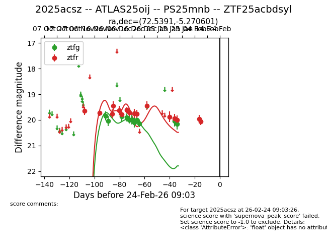
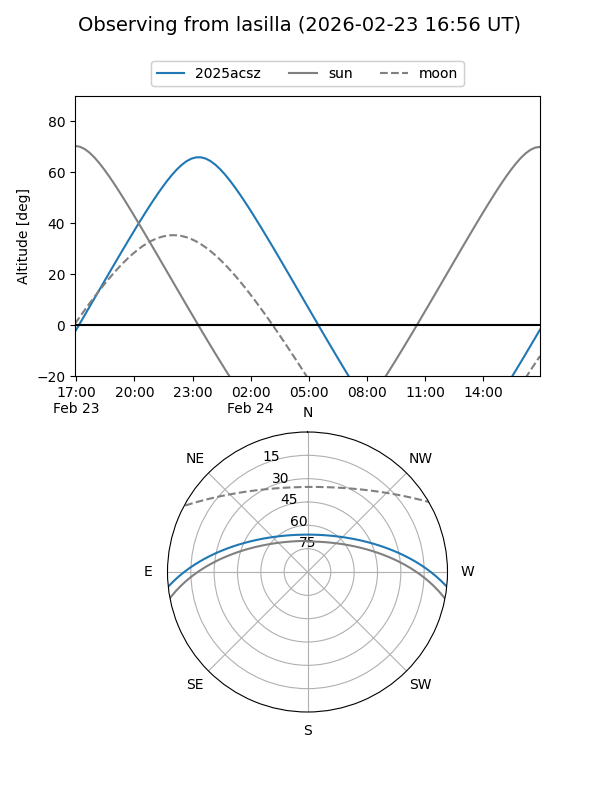
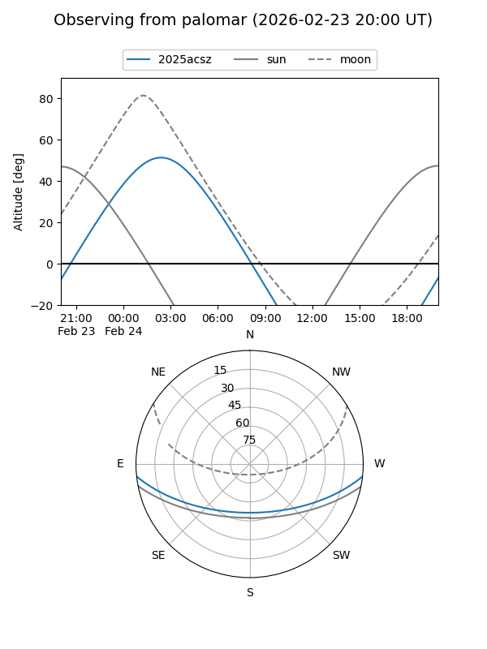
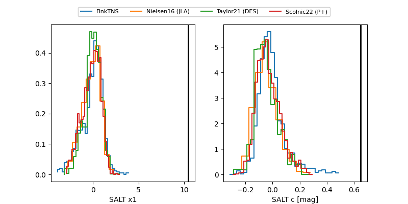

2025acsz
Target 2025acsz at 2026-01-21 05:00
Aliases and brokers:
FINK: link
Lasair: link
ALeRCE: link
TNS: link
YSE: link
alt names
ZTF25acbdsyl (ztf,fink_ztf)
2025acsz (tns,yse)
ATLAS25oij (atlas)
PS25mnb (panstarrs)
Coordinates:
equatorial (ra, dec) = 72.5391,-5.27060
equatorial (HMS+DMS) = 04:50:09.37,-05:16:14.17
galactic (l, b) = (203.1969,-29.29355)
Flags:
Photometry:
last ztfg=20.17, ztfr=20.01
11 ztfg, 14 ztfr detections
Lightcurve

Visibility


Additional plots
